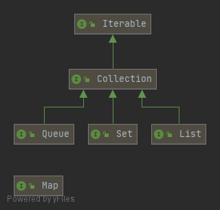
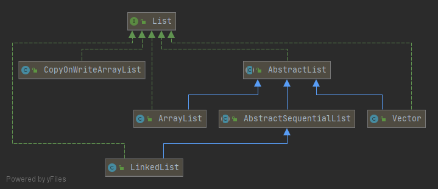
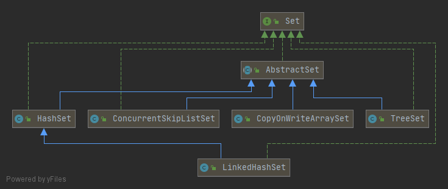
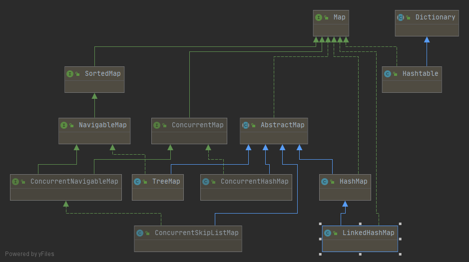
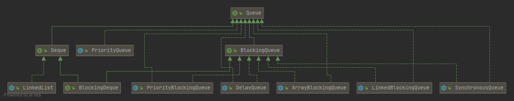

简介
Java的java.util包主要提供了以下四种类型的集合：
List：一种有序列表的集合
Set：一种保证没有重复元素的集合
Map：一种通过键值（key-value）查找的映射表集合
Queue: 先进先出（FIFO：First In First Out）的有序表
Java访问集合总是通过统一的方式——迭代器（Iterator）来实现，它最明显的好处在于无需知道集合内部元素是按什么方式存储的，
ListIterator是一个更强大的 Iterator 子类型，它只能由各种 List 类生成。 Iterator 只能向前移动，而 ListIterator 可以双向移动。

List

ArrayList
ArrayList在内部使用了数组来存储所有元素。可以看作是能够自动增长容量的数组。例如，一个ArrayList拥有5个元素，实际数组大小为6（即有一个空位）
LinkedList
通过链表实现了List接口。在LinkedList中，它的内部每个元素都指向下一个元素
LinkedList是一个双链表,在添加和删除元素时具有比ArrayList更好的性能.但在get与set方面弱于ArrayList.当然,这些对比都是指数据量很大或者操作很频繁(当插入的数据量很小时，两者区别不太大，当插入的数据量大时，大约在容量的1/10之前，LinkedList会优于ArrayList，在其后就劣与ArrayList，且越靠近后面越差)
CopyOnWriteArrayList
juc中提供的在并发编程中读多写少的场景下的list实现, 原理是任何修改操作，如 add、set、remove，都会拷贝原数组，修改后替换原来的数组，通过这种防御性的方式，实现另类的线程安全
Vector
线程安全的List实现，在方法上加入synchronized。现在一般不推荐使用了，可用Collections.synchronizedList来包装集合使用
与Array的区别及转换
数组和List类似，也是有序结构，如果我们使用数组，在添加和删除元素的时候，会非常不方便。例如，从一个已有的数组{‘A’, ‘B’, ‘C’, ‘D’, ‘E’}中删除索引为2的元素
这个“删除”操作实际上是把’C’后面的元素依次往前挪一个位置，而“添加”操作实际上是把指定位置以后的元素都依次向后挪一个位置，腾出来的位置给新加的元素。这两种操作，用数组实现非常麻烦
list转array
1 | Integer[] array = list.toArray(Integer[]::new); |
array转list
1 | Integer[] array = { 1, 2, 3 }; |
要注意的是，返回的List不一定就是ArrayList或者LinkedList，因为List只是一个接口，如果我们调用List.of()，它返回的是一个只读List。对只读List调用add()、remove()方法会抛出UnsupportedOperationException
如果对 List 对象做了任何修改，又不想让原始数组被修改，那么就应该在另一个集合中创建一个副本。
Set

Set用于存储不重复的元素集合,如果我们只需要存储不重复的key，并不需要存储映射的value，那么就可以使用Set。Set实际上相当于只存储key、不存储value的Map。我们经常用Set用于去除重复元素
Set接口并不保证有序，而SortedSet接口则保证元素是有序的：
HashSet
HashSet是无序的，因为它实现了Set接口，并没有实现SortedSet接口。HashSet内部通过维护一个HashMap来实现读取插入等功能
TreeSet
TreeSet是有序的，因为它实现了SortedSet接口。使用TreeSet和使用TreeMap的要求一样，添加的元素必须正确实现Comparable接口，如果没有实现Comparable接口，那么创建TreeSet时必须传入一个Comparator对象, 可按照条件进行排序
LinkedHashSet
LinkedHashSet底层使用LinkedHashMap来保存所有元素，它继承与HashSet，其所有的方法操作上又与HashSet相同, LinkedHashSet中的元素顺序是可以保证的，也就是说遍历序和插入序是一致的
LinkedHashSet输出顺序是确定的，就是插入时的顺序
CopyOnWriteArraySet
juc中提供的在并发编程中读多写少的场景下的set实现，内部维护了一个CopyOnWriteArrayList，CopyOnWriteArraySet相对CopyOnWriteArrayList用来存储不重复的对象
ConcurrentSkipListSet
juc中提供的在并发编程中线程安全的有序的集合，适用于高并发的场景。ConcurrentSkipListMap其实是TreeMap的并发版本，但实现是不一样的：ConcurrentSkipListSet是通过ConcurrentSkipListMap实现的，而TreeSet是通过TreeMap实现的
Set 最常见的用途是测试归属性，可以很轻松地询问某个对象是否在一个 Set 中。因此，查找通常是 Set 最重要的操作，因此通常会选择 HashSet 实现，该实现针对快速查找进行了优化。
Map

map相关的介绍在java多线程6-ConcurrentHashMap有体现，另外再补充一个EnumMap
EnumMap
如果作为key的对象是enum类型，可以使用Java集合库提供的一种EnumMap，它在内部以一个非常紧凑的数组存储value，并且根据enum类型的key直接定位到内部数组的索引，并不需要计算hashCode()，既保证速度，也不浪费空间
Queue

Queue
它和List的区别在于，List可以在任意位置添加和删除元素，而Queue只有：
| 功能 | 抛异常 | 返回值 |
|---|---|---|
| 增(把元素添加到队列末尾) | add(e) | offer(e) |
| 删(从队列头部取出元素) | remove() | poll() |
| 查(或者说瞧，看队列中还有没有元素) | element() | peek() |
两组方法的区别：
- 如果队列空了，那 remove() 会抛异常，而poll() 返回null；element() 会抛异常，而 peek() 返回null;
- 有些队列(如BlockingQueue)会有容量的限制，当达到了最大的容量且不会扩容时，使用add(e)就会抛异常；而 offer(e) 返回false;
所以使用时尽量前后统一，即前面使用了add(e)后面就使用remove()，前面使用了offer(e)后面就使用poll();
PriorityQueue
优先队列,它的出队顺序与元素的优先级有关(如排队时vip的处理)
PriorityQueue默认按元素比较的顺序排序（必须实现Comparable接口），也可以通过Comparator自定义排序算法（元素就不必实现Comparable接口）
BlockingQueue
并发编程中经常用到了阻塞队列，如线程池的任务队列java多线程2-线程池，它是基于ReentrantLock
阻塞队列BlockingQueue就是为线程之间共享数据而设计的
- 当队列中没有数据的情况下，消费者端的所有线程都会被自动阻塞（挂起），直到有数据放入队列
- 当队列中填满数据的情况下，生产者端的所有线程都会被自动阻塞（挂起），直到队列中有空的位置，线程被自动唤醒
这也是我们在多线程环境下，为什么需要BlockingQueue的原因。作为BlockingQueue的使用者，我们再也不需要关心什么时候需要阻塞线程，什么时候需要唤醒线程，因为这一切BlockingQueue都给你一手包办了
Deque
双端队列(允许两头都进，两头都出)，那自然是有针对First端的操作和对Last端的操作：
| 功能 | 抛异常 | 返回值 |
|---|---|---|
| 增(把元素添加到队列头部/末尾) | addFirst(e)/ addLast(e) | offerFirst(e)/ offerLast(e) |
| 删(从队列头部/末尾取出元素) | removeFirst()/ removeLast() | pollFirst()/ pollLast() |
| 查(或者说瞧，看队列中还有没有元素) | getFirst()/ getLast() | peekFirst()/ peekLast() |
LinkedList即是List，又是Queue，还是Deque,但是，在使用的时候，如果我们把它当作List，就获取List的引用，如果我们把它当作Queue，就获取Queue的引用
- getFirst() 和 element() 是相同的，它们都返回列表的头部（第一个元素）而并不删除它，如果 List 为空，则抛出 NoSuchElementException 异常。 peek() 方法与这两个方法只是稍有差异，它在列表为空时返回 null 。
- removeFirst() 和 remove() 也是相同的，它们删除并返回列表的头部元素，并在列表为空时抛出 NoSuchElementException 异常。 poll() 稍有差异，它在列表为空时返回 null 。
- addFirst() 在列表的开头插入一个元素。
- offer() 与 add() 和 addLast() 相同。 它们都在列表的尾部（末尾）添加一个元素。
- removeLast() 删除并返回列表的最后一个元素。
使用时一样，尽量用同一组方法
1 | // 这是一个List: |
注意
由于Java的集合设计非常久远，中间经历过大规模改进，我们要注意到有一小部分集合类是遗留类，不应该继续使用：
- Hashtable：一种线程安全的Map实现；
- Vector：一种线程安全的List实现；
- Stack：基于Vector实现的LIFO的栈(Java 6 添加了 ArrayDeque ，其中包含直接实现堆栈功能的方法)
如使用ArrayDeque封装下：
1 | public class Stack<T> { |
还有一小部分接口是遗留接口，也不应该继续使用：Enumeration
线程安全集合
| interface | non-thread-safe | thread-safe |
|---|---|---|
| List | ArrayList | CopyOnWriteArrayList |
| Map | HashMap | ConcurrentHashMap |
| Set | HashSet / TreeSet | CopyOnWriteArraySet |
| Queue | ArrayDeque / LinkedList | ArrayBlockingQueue / LinkedBlockingQueue |
| Deque | ArrayDeque / LinkedList | LinkedBlockingDeque |
java.util.Collections工具类还提供了一个旧的线程安全集合转换器，可以这么用:
1 | Map unsafeMap = new HashMap(); |
但是它实际上是用一个包装类包装了非线程安全的Map，然后对所有读写方法都用synchronized加锁，这样获得的线程安全集合的性能比java.util.concurrent集合要低很多，一般不推荐使用。
例如:
1 | private static class SynchronizedMap<K,V> |
Collections
java提供了Collections方便集合的操作
- 排序
1 | List<Integer> list = Arrays.asList(2, 4, 9, 3, 1, 5, 8, 6); |
reverse的意思是反转，而不是降序。只是将list集合原来的顺序反转了一下，反转并不意味着降序了。所以要想实现降序，可以先对集合进行升序，然后再反转，这样就降序了
使用场景
- 如果要经常随机访问，推荐ArrayList
- 如果经常从列表的任意位置插入或者删除元素，推荐LinkedList
- 如果需模拟堆栈(后进先出)，推荐LinkedList
- 使用map如果不要求顺序，推荐HashMap
- 使用map如果需要根据自己需要进行排序，推荐TreeMap
- 使用map如果需要按照插入的顺序进行访问，又想保持快速访问的能力，推荐LinkedHashMap
- 想要列表中不存在重复元素，推荐set, 由于set的很多实现类实际上是map实现类的特殊存在(value为空对象的map), 故使用哪个实现类同map一样
不要在新代码中使用遗留类 Vector ，Hashtable 和 Stack(替代为ArrayDeque)
面试常见问题
Vector 和 ArrayList 的区别是什么？
- 线程安全问题，Vector在很多方法上都添加了synchronized以保障线程安全，但线程安全的成本就是效率会降低，在某些系统里很容易成为瓶颈；
- 扩容时ArrayList的新容量是原容量的1.5倍，而Vector默认则为两倍；
ArrayDeque 和 LinkedList 的区别有哪些？
- ArrayDeque 是一个可扩容的数组，LinkedList 是链表结构；
- ArrayDeque 里不可以存 null 值，
- 但是 LinkedList 可以；ArrayDeque 在操作头尾端的增删操作时更高效，但是 LinkedList 只有在当要移除中间某个元素且已经找到了这个元素后的移除才是 O(1) 的；
- ArrayDeque 在内存使用方面更高效。
所以，如果要实现普通的队列只要不是必须要存null值，推荐ArrayDeque。当然如果需要兼容Java6之前的版本就得用LinkedList，因为ArrayDeque是Java6才引入的。